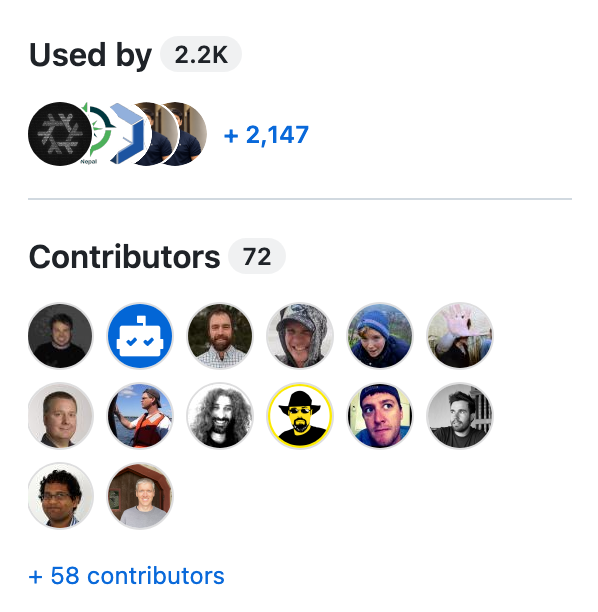
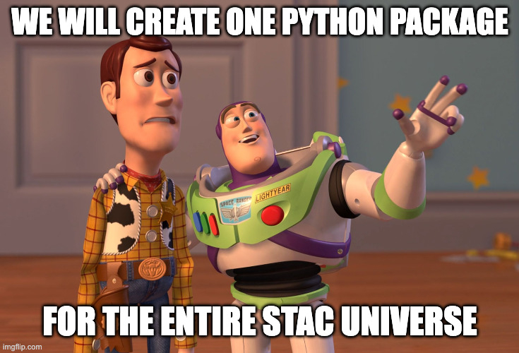
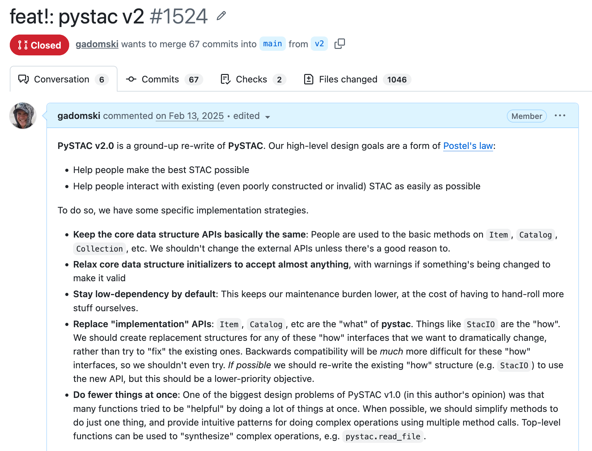
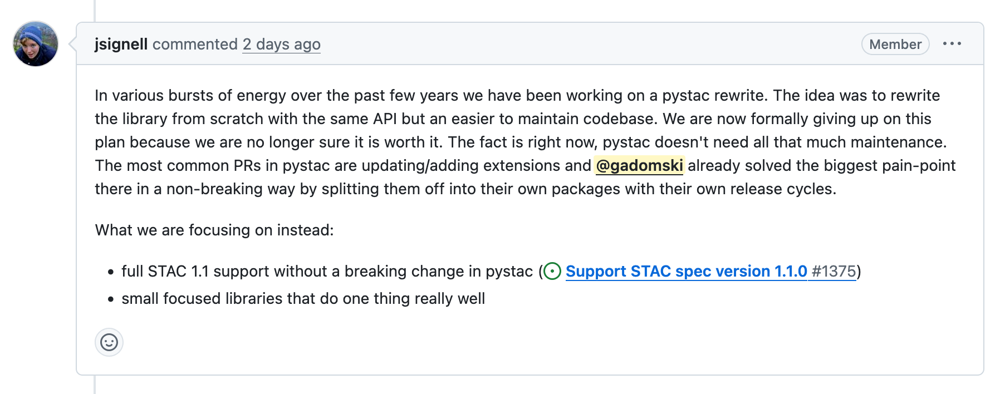
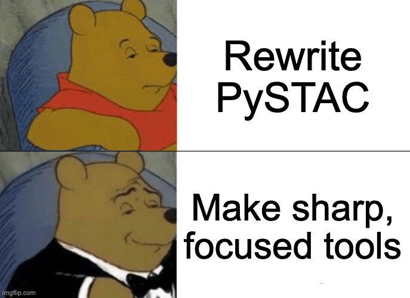

Rewriting PySTAC

Pete Gadomski and Julia Signell, Development Seed, STAC PSC
State Library of New South Wales collection, No restrictions, via Wikimedia Commons
.jpg){kind=link}
What is a STAC?
SpatioTemporal Asset Catalog
An open specification and an ecosystem of extensions and software for that specification.
What is a PySTAC?
The primary Python part of that ecosystem.
PySTAC is essentially a fancy JSON munging tool that helps people read and write STAC metadata using Python objects.
What is a PySTAC?

The history of PySTAC
commit 1fe88114bb30fc58692d77a92e8e08b80ad47ef8
Author: lossyrob <rdemanuele@gmail.com>
Date: Thu Sep 12 17:10:08 2019 -0400
Initial commit.
- v1.0.0 release in 2021
- Currently on v1.15.2
The tensions of PySTAC

The tensions of PySTAC: data producers
- Strict, validated outputs
- Link mutations
- Type hints for extensions
- Lots of extensions
The tensions of PySTAC: data consumers
- Permissive reads
- Multiple extension versions
- Read configuration (e.g. auth)
PySTAC v2

probably James Murray (1865–1914), Public domain, via Wikimedia Commons
.jpg){kind=link}
An attempt

Annnnd...abandoned

What have we learned?

Frank Hurley, Public domain, via Wikimedia Commons

We could solve a lot of the pain points without breaking the API
dependencies = [
"pystac >= 1.15",
"pystac-ext-projection == 2.0.1",
"pystac-ext-my-custom-extension"
]
Full STAC v1.1 support (WIP)

The next generation of STAC I/O
- object storage (cloud storage)
- stac-geoparquet
- auth patterns
- (maybe) async?
PySTAC is good enough

Downside: increased ecosystem complexity
Are these kinds of utility libraries still important in the age of AI coding?
Correctness is important
Re-writing your entire processing stack is expensive
And then you have to maintain it
Sharp, focused tools will outperform monoliths
Rewriting PySTAC